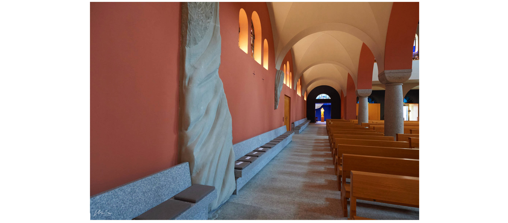
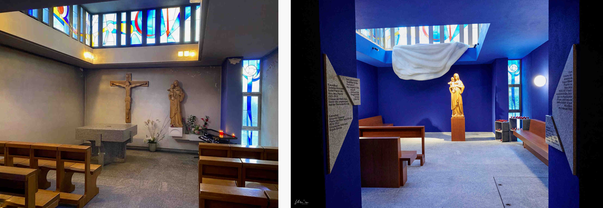
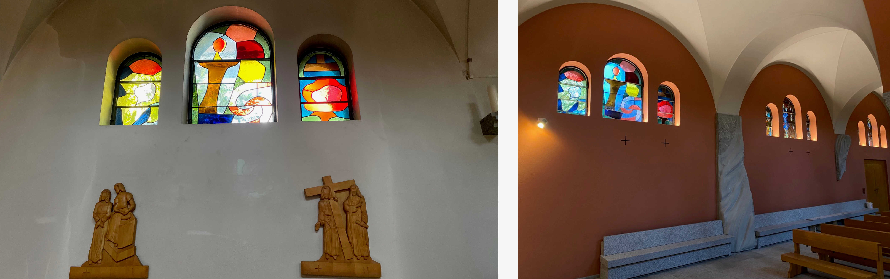

Dann wird man zu den Bergen sagen:
Fallt auf uns! und zu den Hügeln: Deckt uns zu!
Denn wenn das mit dem grünen Holz geschieht,
was wird dann erst mit dem dürren werden?
Lukas 23,30-31
Die Spannung war gross an diesem sonnigen und warmen Sonntag, dem 7.
April 2023. Endlich fertig, das Warten hat sich gelohnt! Im neuen Glanz
erstrahlt die City-Kirche Herz Jesu in Zürich Wiedikon. Zentrumsnah
gelegen am Fusse des Uetlibergs, dem Zürcher Hausberg, erhebt sich die
Kirche im mittlerweile trendigen Arbeiterquartier. Neben Bahnhofsstrasse
und Goldküste ist auch dies eine Facette von Zürich, das lebendig und
multikulturell von seinen Kirchen und Synagogen geprägt ist.
Über zwei Jahre Arbeit, geprägt von Dialogen, Visionen, Denkprozessen,
Spannungen und Entspannungen, fanden an diesem Tag im April mit einem
festlichen Gottesdienst ihren Abschluss. Der letzte Umbau war 1963, der
erste Spatenstich fand am 20. April 1920 statt. Damals war Oerlikon noch
nicht in Zürich eingemeindet, was erklärt, warum die Stadt Zürich zwei
römisch-katholische Kirchen mit dem Namen Herz Jesu hat: eine in
Wiedikon und eine in Oerlikon.
Architektur für einladende Seelsorge
«Die Kirche soll mit einer einladenden Seelsorge sowie kulturellen und
sozialen Angeboten der heutigen Gesellschaft als ein Ort der Begegnung
und des Austauschs dienen», erklärt Artur Czastkiewicz, Pfarrer von Herz
Jesu. Die Zürcher Architektinnen Nina Andrea Renner und Corinne Weber
vom Büro Renner Weber haben hierfür mit dem Umbau eine solide Basis
geschaffen.
Bei der Restauration wurde versucht, die Grundausstrahlung und -elemente
der Kirche so zu renovieren, dass Altes bleibt und Neues, Überraschendes
sich harmonisch einfügt. Ziel der Renovation des Kirchenraums war, ein
visuelles und sinnliches Gesamtkunstwerk zu schaffen. Beim Betreten der
Kirche wird sofort klar, was damit gemeint ist: Das dominante Apsisbild,
ein überdimensionaler Gnadenstuhl (Bildtypus zur Darstellung der
Trinität), des deutschen Künstlers Felix Baumhauer (1876–1960), das
bereits zum Zeitpunkt seiner Entstehung 1924 nicht unumstritten war,
fügt sich nun harmonisch in den Kirchenraum ein. Die Architektinnen
nahmen in ihrem Farbkonzept die im Gemälde dominierenden Farben auf und
zogen sie in den Raum hinein. Die Arkadenbögen und die Wände der
Seitenschiffe tauchten sie in ein warmes Rosa, die Holzdecke liessen sie
blau streichen.
Links vor und rechts nach der Renovation 2023. (Bild: zvg Herz Jesu Wiedikon und Silke Weinig)
Fliessende Skulpturen
Neben einem komplett neuen Farbkonzept gehört insbesondere die Kunst von
Karsten Födinger (*1978) zu den entscheidenden Neuerungen. Für seine
Skulpturen liess sich der gebürtige Kölner und Baloise-Kunst-Preisträger
von Lukas 23,30-31 und Gewandfalten inspirieren, wie sie seit
Jahrhunderten als klassisches Motiv in der christlichen Ikonografie
vorkommen. Denn diese weisen «zum einen auf die zeitliche Dimension der
christlichen Kultur, zum anderen auf Körperlichkeit und Bewegung, aber
auch auf Fürsorge und Gehaltensein», so der Künstler.
Sein Anliegen ist es, durch die Materialität und die Platzierung seiner
Kunstwerke sowie durch ihre strukturellen und ästhetischen Eigenschaften
die Aspekte der spirituellen Versenkung, der Verwandlung und
Transformationsprozesse, des Stützens und Haltens, aber auch der Präsenz
und der Gemeinschaft zum Ausdruck zu bringen.
Die neuen Kunstwerke
Für die renovierte Oberkirche hat Födinger eine mehrteilige Werkanlage geschaffen, die aus insgesamt fünf grossen Sandsteinskulpturen besteht. Vier sind im Innenraum der Oberkirche angeordnet: Zwei befinden sich im rechten Seitenschiff, eine weitere im linken Seitenschiff, die vierte in der Marienkapelle. Eine fünfte verbindet im Aussenraum Dach und Fassade der Marienkapelle.
Das Seitenschiff im neuen Glanz und mit Blick auf die Marienkapelle. (Bild: zvg Herz Jesu Wiedikon)
Die Sandsteinskulpturen in den Seitenschiffen der Kirche versteht Karsten Födinger als wichtigen Bestandteil der Gestaltung des Kirchenraums: «Sie verleihen dem Raum eine kräftige Gliederung und schaffen durch ihre Anwesenheit eine Atmosphäre der spirituellen Ruhe.» Die Objekte, die diese Ruhe ausstrahlen, befinden sich inmitten des schlichten Kreuzweges. Sie wirken wie fliessende Steine, die in der Passion einen ersten Ausblick auf die Transformation an Ostern geben. Das Leiden soll weder ausgeklammert noch verdrängt werden, jedoch hat der Tod nicht das letzte Wort. Der Kreuzweg ist auch Auferstehungsweg. Es gilt das Heute Gottes in den Kreuzwegstationen zu erfahren und zu leben. Die Skulpturen laden ein, innezuhalten und sich auf die eigene Spiritualität zu besinnen.
Geborgenheit in der Kapelle
Eine besondere Erwähnung verdient die Marienkappelle. Sie soll dem Bedürfnis nach Ruhe, Einkehr und Meditation gerecht werden. «Hier soll es sich anfühlen wie im Mutterschoss», erklärt Sigmund Tur, Mitglied der Kirchenpflege. Die Kapelle strahlt in einem kräftigen Marienblau und ist mit einer Marienstatue, bequemen Bänken und einer Kerze schlicht eingerichtet. Die dortige, weisse Sandsteinskulptur von Karsten Födinger zeigt einen überdimensionalen Faltenwurf und verweist auf Darstellungen der Mutter Maria, insbesondere der Pietà von Michelangelo im Petersdom. Die Skulptur greift die Funktion Mariens als Mittlerin zwischen dem Göttlichen und dem Irdischen auf – zwischen Gott und uns Menschen. Durch die Vergrösserung des weissen Faltenwurfs inmitten der tiefblauen Kapelle vermittelt das Werk eine Atmosphäre der Geborgenheit und des Schutzes, fast als wäre man selbst unter dem umhüllenden und beschützenden Mantel von Maria.
Die Marienkapelle links vor und rechts nach der Renovation. (Bild: zvg Herz Jesu Wiedikon und Silke Weinig)
Zum Abschluss ein Rätsel
Was hat der Trierer Dom mit Herz Jesu Wiedikon gemeinsam? Kunst von Ferdinand Gehr (1896–1996)! Lange Zeit wusste das kaum eine:r – nicht einmal die Familie von Ferdinand Gehr selbst. Im Januar 2023 fand bei Herz Jesu Wiedikon eine Veranstaltung namens «Künstlertöchter» statt, zu der Franziska Gehr, die den Nachlass ihres Vaters verwaltet, eingeladen war. Als man ihr sagte, dass sich von ihrem Vater gestaltete Fenster in Herz Jesu Wiedikon befänden, antwortete sie spontan: «Was? Die sind bei Euch? Seid Ihr Euch sicher? Ich dachte, die seien in Herz Jesu Oerlikon.» Sie ist nicht die Einzige, die nicht wusste, dass sich in der schlichten Stadtkirche Kunst von Weltformat befindet! So werden an diesem theologisch bedeutsamen Ort Rätsel gelöst, gestalterische Transformationen umgesetzt und Spiritualität in kunstvoller Umgebung gelebt.
Vor und nach der Renovation. Links die Fenster von Ferdinand Gehr über dem Kreuzweg. Rechts die Fenster von Ferdinand Gehr und Skulpturen von Karsten Födinger. (Bild: zvg Herz Jesu Wiedikon und Silke Weinig)
Silke Weinig ist Studierende der Theologischen Hochschule Chur und seelsorgende Mitarbeitende der katholischen Pfarrei Herz Jesu Zürich Wiedikon.
Weitere Artikel von {{ author.author }} finden Sie hier:
Zur Vertiefung:
- Truffer, Henri: Verband der römisch-katholischen Kirchgemeinden der Stadt Zürich, Zürich 1989.
- Schönbächler, Robert: Kirchen und Gotteshäuser der Stadt Zürich. Neujahrsblatt Industriequartier/Aussersihl, Zürich 2012.
- Stadt Zürich, Amt für Städtebau (Hrsg.): Katholische Kirchen der Stadt Zürich. Bestandesverzeichnis Denkmalpflege der Stadt Zürich, Zürich 2014.
- Weber, Markus / Kölliker, Stephan: Sakrales Zürich. 150 Jahre katholischer Kirchenbau im Kanton Zürich, Ruswil 2018.